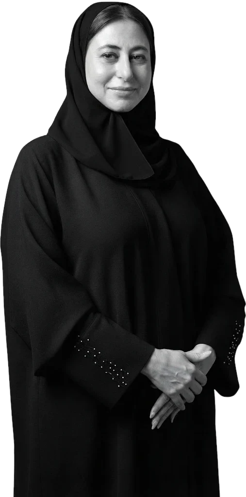

We exist to make aquaculture work — for our ecosystems, for food security, and for future generations. In a region where seafood demand is growing and marine ecosystems are under strain, we believe in a better way: simpler, smarter, and grounded in nature.
Our vision
To nurture a sustainable future by cultivating what thrives naturally, with humility, care, and scientific rigour.
A region hungry
for change
Demand for seafood in the UAE is growing at 8% annually, expected to reach 900,000 tonnes by 2030. Yet our local fisheries are in decline, and most aquaculture projects face challenges tied to over-engineered systems and species not suited to Gulf waters.
Despite significant investment, aquaculture in the UAE has yet to reach its potential. At Gulf Aquaculture, we saw this not as a failure — but an opportunity to rethink, simplify, and rebuild from first principles.
We’re Doing
Things
Differently
We believe success starts small.
Our method is rooted in four pillars:
- Prioritise native species like grouper and red snapper
- Keep upland infrastructure minimal — just hatchery and nursery
- Move juveniles to sea cages early, reducing energy use
- Grow gradually through proof of concept, validation, and iteration
We call this:
Local Species in Local Waters.

This isn’t just a job.
It’s a responsibility
to the Gulf.
Aquaculture, grown in the Gulf.
Our sea cages, hatchery, laboratories and the people behind them — in a 7-minute film.
From vision to operation
Our story, mission, principles, legal structure and a conversation with our General Manager.
Our story 02Where innovation meets simplicity
Five phases, continuous lab oversight and full traceability.
Operations 03Assets under management
Balghailam Island and the Sheikh Khalifa Marine Research Centre.
Assets 04Local species, local knowledge
Hamour, Hamra, Shiqra, Shaari, Seabream and Umm Drais — native, resilient, well-adapted.
Species 05Built for tomorrow
Sustainability in practice, Phase II and our regional footprint.
Growth 06The people behind the progress
A better future is grown, not guessed.
People“We're not building a fish farm. We're building trust — in the idea that the UAE can feed itself, responsibly.”Mohamed Razali · General Manager
Every phase is tested before it's scaled. That's how we build trust — with nature and with investors.
Read the conversationWe welcome conversations that move aquaculture forward.
Whether you're an investor who shares our long-term vision, a researcher exploring native species, or a policymaker shaping the future of food — we believe progress happens through partnership.
Let's talk